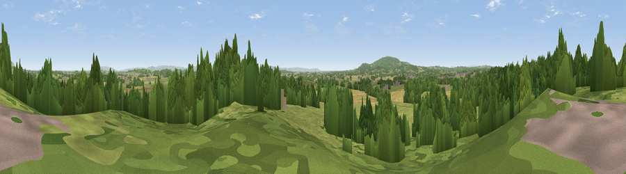

Viewpoint near Upleadon
#35533 in England · top 74% of its area beats it · near UpleadonWhere it is
The exact computed spot (SO 75075 27275). Click the marker for map links.
The view, rendered

A 360° render of this exact spot computed from the terrain model, tree cover and land cover — summer colours, afternoon light, calibrated against photographs of famous viewpoints. Real trees, hedges and buildings will differ in detail.
The panorama
Grey silhouette: terrain skyline in each direction (720 bearings, Earth curvature and refraction included). Dashed green: skyline with trees (+15 m) and buildings (+8 m) as obstacles. Blue strip: how far the ground is visible on each bearing.
Where the view opens
Wedge length = distance to the farthest visible ground on that bearing (vegetation-aware). Rings at 10, 25 and 50 km.
What fills the view
49% grassland · 37% woodland · 13% cropland · 1% built-up
Angular shares of the visible panorama (visual magnitude), not map area. Landscape diversity 0.45 (0–1 Shannon).
Key numbers
More beautiful places nearby
The staircase of upgrades: each row has a higher view potential than everything closer. Driving times are estimates from straight-line distance, calibrated against real road routing — check an actual route before setting out.
| Place | Direction | Drive | Score |
|---|---|---|---|
| Eden Hill | E · 1 km | ~3 min | 45.2 |
| Viewpoint near Bromesberrow Heath | NNW · 5 km | ~10 min | 49.1 |
| Viewpoint near Hartpury | SE · 5 km | ~11 min | 54.7 |
| Viewpoint near Redmarley d'Abitot | N · 5 km | ~11 min | 67.3 |
| Corse Grove Hill | E · 8 km | ~16 min | 67.6 |
| Viewpoint near May Hill | SW · 8 km | ~16 min | 76.1 |
| Chase End Hill | N · 8 km | ~17 min | 81.5 |
| Ragged Stone Hill | N · 9 km | ~18 min | 82.5 |
51.94341, -2.36401 · source: screening · position refined by local search. Computed location — check access rights before visiting.